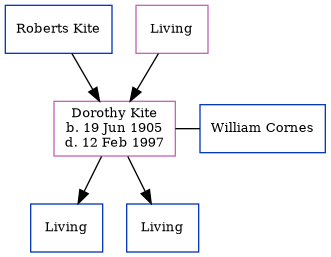

Dorothy Maud Cornes (née Kite) 1905 - 1997
[ Home ] | [ Calendar ] | [ Surnames Index ] | [ Errors ] | [ Family History ]The child of Roberts Kite and Elizabeth Page, Dorothy Kite, the third cousin once-removed on the father's side of Nigel Horne, was born in Elham, Kent, England on 19 Jun 19051,2 and. She had 2 surviving children with William James Cornes: Roberts Ian and James A.
She died on 12 Feb 1997 in Aberconwy, Gwynedd, Wales2,3.
Parents
- Elizabeth Sarah Anne
Citations
- England & Wales births 1837-2006 - Findmypast
- England & Wales deaths 1837-2007 - Findmypast
- England & Wales Government Probate Death Index 1858-2019 - Findmypast
Media
England & Wales Government Probate Death Index 1858-2019 - GBOR/GOVPROBATE/B/1996-1998/00513086
England & Wales deaths 1837-2007 - BMD/D/1997/2/81848226
Family Tree
Map
Generated by ged2site. Last updated on Jul 3, 2024
Known Issues
No records of living with anyone